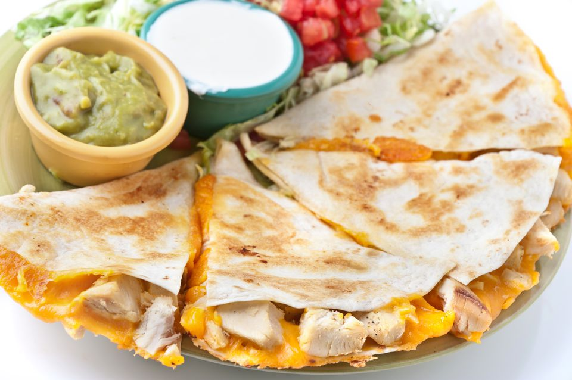
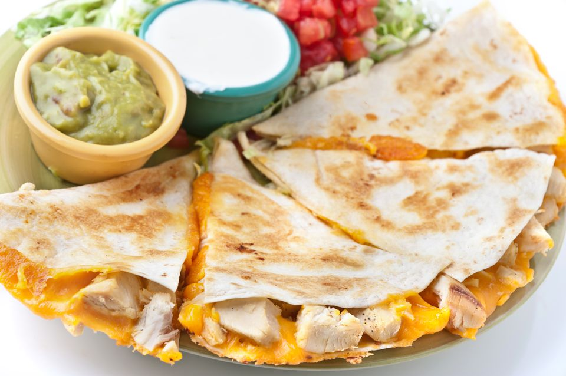
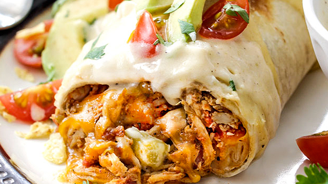
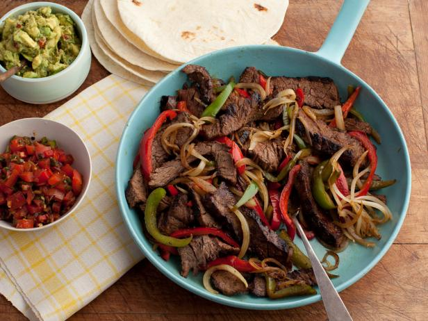
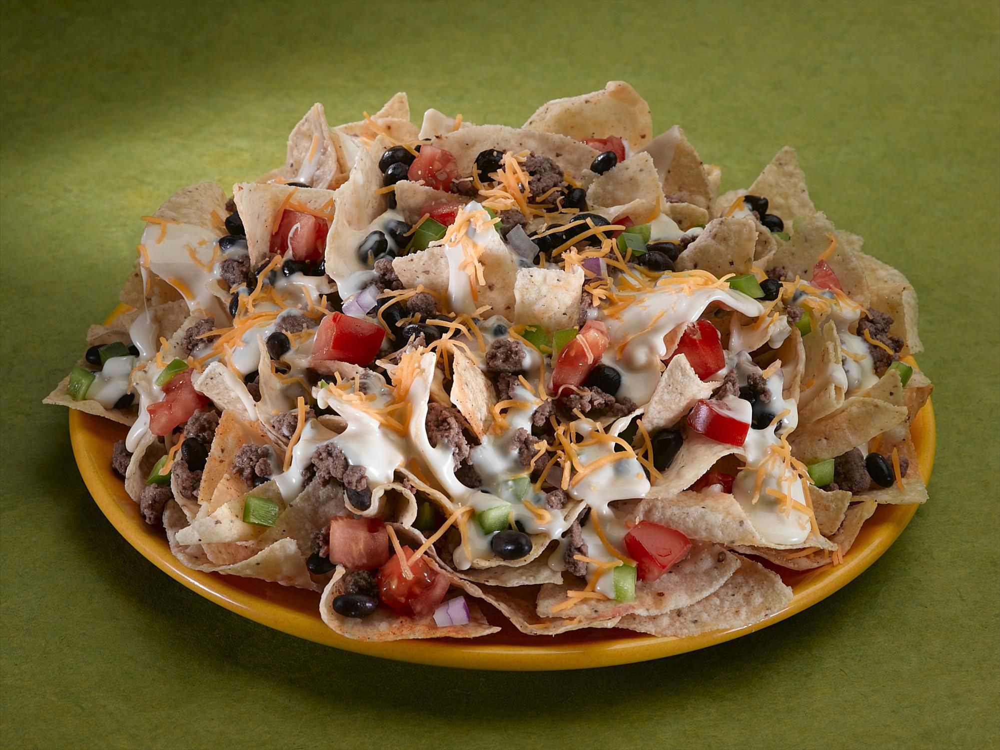

Mexican Food For Dummies
Basic Mexican Food and the Ingredients!
 

This is a Quesadilla
Ingredients:
4 (10-inch) flour tortillas,
1 cup grated cheese, (cheddar or Mexican blend),
4 tablespoons butter,
chunked chicken *optional

This is a Burrito
Ingredients:
1 pound groud beef (or any meat),
1/4 cup chopped onion,
1 can (15 ounces) chili with beans,
1 1/4 cups chunky salsa,
1/4 cup chopped green chiles,
8 flour tortillas(8 inches), warmed,
1-2 cups of cheese (your choice),
taco sauce and shredded lettuce *optional

This is a Taco
Ingredients:
1 pound of ground beef,
10 pack of Old El Paso taco shells,
1 cup Old El Paso Thick 'n Chunky salsa,
1/2 head of lettuce, shredded,
1 medium tomato, chopped (3/4 cup),
1 cup shredded Cheddar cheese (4 ounces)

These are Fajitas
Ingredients:
1 package of tortilla shells,
1 1/2 pound of chicken/beef,
3 bell peppers(various colors),
1 onion, a sliced avocado,
a package of fajita seasoning,
salsa, sour cream, and lettuce *extras

These are Nachos
Ingredients:
1 bag of tortilla chips,
1 can of queso (your favorite brand),
1 chopped tomato,
1 can of refried/ whole beans,
1/2 pound of meat (your choice)
sour cream, salsa, jalapenos, and avocado *optional
Hope You Enjoy These Recipes!